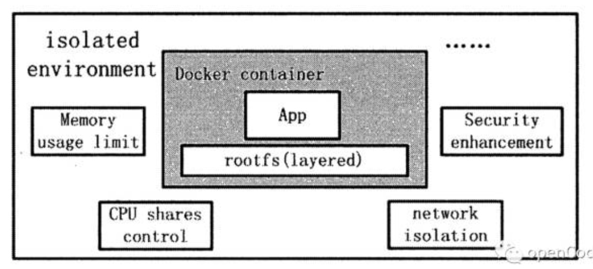
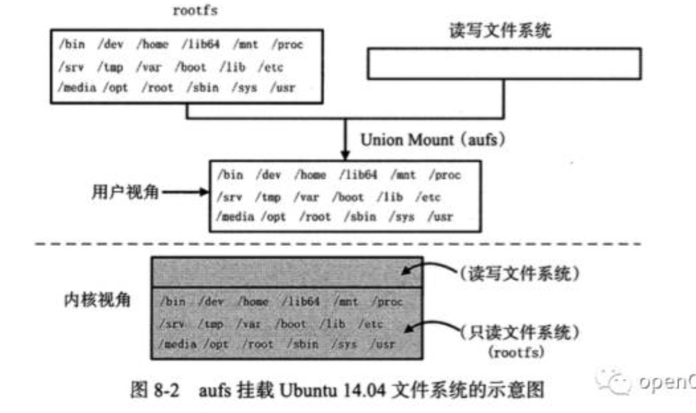
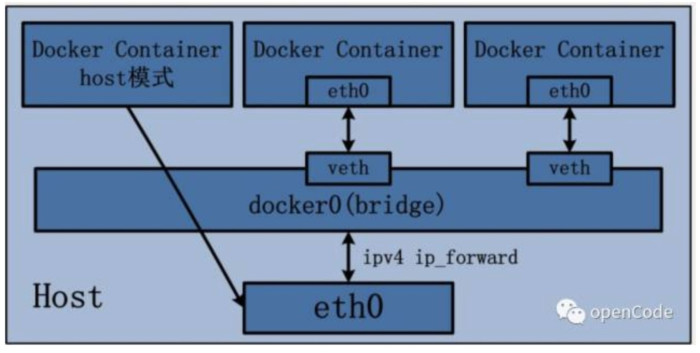
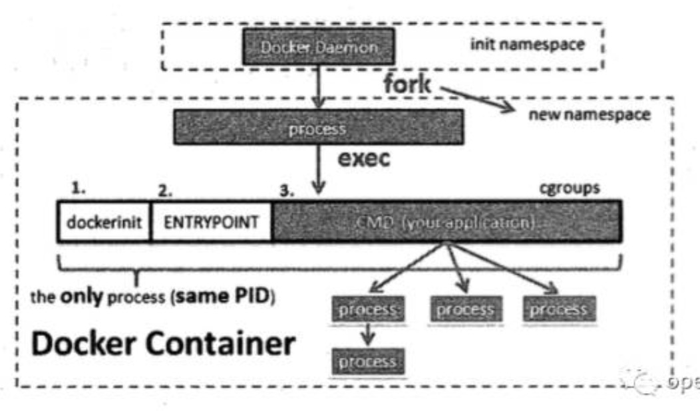

本文旨在从虚拟机使用的角度对照着理解docker容器的实现。
容器化技术也是属于虚拟化的一种，虚拟机的虚拟化不管技术如何实现，使用者角度体验都是类似。
namespace和cgroups
namespace的隔离机制是虚拟化的基础，Linux在chroot的基础上提供了对UTS、IPC、mount、PID、network、User等隔离机制。而cgroups在隔离的基础上，提供了资源的限制和控制功能。
这些基础技术的文章已经有很多，推荐看下左耳朵耗子的，本文只希望从稍微大点的层面把这些概念串起来。
当我们希望虚拟出一个貌似独立的操作系统环境时，都需要哪方面的虚拟化，以及在容器里如何实现的？

独立的用户系统
登录该操作系统需要一个用户，那么不管是root还是非root，都需要一套独立的用户系统。
User namespace可以提供该功能，容器内的用户和外部不会冲突。
独立的主机名
UTS namespace可以提供该隔离功能。
独立的进程树
PID namespace可以提供该隔离功能。
IPC通信
IPC namespace可以提供该隔离功能。
独立的文件系统，可以从镜像启动
典型的Linux文件系统由bootfs和rootfs组成，bootfs(boot file system)主要包含 bootloader和kernel，bootloader主要是引导加载kernel，当kernel被加载到内存中后 bootfs就被umount了。rootfs (root file system) 包含的就是典型 Linux 系统中的/dev，/proc，/bin，/etc等标准目录和文件。
Mount namespace可以提供该隔离功能（类似于chroot命令），而在docker里用这个功能挂载rootfs，并且和AUFS(也可以是其他的Union 文件系统)一起使用。各种容器里运行的进程不一定需要这么多系统目录，在docker里把原本linux文件系统里的rootfs分为多份，使用AUFS的union mount技术一层一层组合起来，组成read only层，最上层则有write权限，可以由容器中允许的进程修改。
linux镜像的内容和其文件系统一致，有bootfs和rootfs，而docker有自己的启动方式，所以上面的readonly层和readwrite层组合起来就是最终的docker镜像。

独立的网络
和宿主机隔离开，有自己的网络设备和网段。
Network namespace可以提供该隔离功能，网络设备在两个namespace之间是互相看不到的。但也只是隔离，虚拟机中的网络设备模拟正常的linux系统，有许多默认的比如lo设备，还有自己的网卡设备，docker都可以模拟出来。
docker有多种网络模式，这里只用下图说明下bridge网络模式。
docker的namespace内创建一个网卡设备,宿主机创建一个bridge设备，通过veth pair讲两者连接起来，则成功将两个network namespace的设备连通。

网络也有自己的安全机制，可以控制数据的进出
有了上面的模拟网络的基础，则可以通过宿主机的iptables来控制网络数据。
资源限制
上述隔离算是对环境的隔离，以及对linux环境的模拟，在实际使用中还要有对资源的隔离，这时cgroups派上用场，可以对CPU、memory等资源的使用加以限制或控制。
上面讲了可以用来做容器虚拟化的各种系统功能，但是这一切功能在具体实现中都需要一个起点，这个起点就是开启一个新的进程。
各种namespace的使用在具体代码实现中，都是fork一个新的进程过程中，使用不同的系统调用或选项参数组合，来决定这个新的进程进行哪些环境的隔离。比如说network namespace，可以控制容器启动时可以和宿主机处于同一个network namespace下，这种就是docker的host网络模式，可以宿主机直连。
启动的新进程在docker容器里就是dockerinit进程，该进程做一些初始化工作，使用cgroups对资源使用做限制，或者创建容器的network namespace下的网络设备等等，最后则会执行entrypoint或者用户定义的CMD应用程序（Dockerfile中的CMD）。
如下图，所有的这些工作都是在同一个进程下进行的，一般情况下，一个容器就是一个进程。

参考文章
《Docker源码分析》
https://coolshell.cn/articles/17010.html
https://coolshell.cn/articles/17029.html
https://coolshell.cn/articles/17049.html